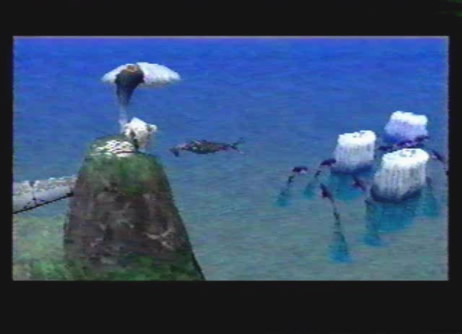

Diary Entry 15: Georgius An Ancient Evil from the Distant Past The dragon and I arrived above a place just to the north of the Forbidden Zone, called Georgius. Straight in front of us was a gigantic tornado. We had to force our way through hordes of monsters, just to reach it. Once we reached the tornado, we made our decent into the unknown depths. Below, we found a group of ancient guardians circling around the base of the tornado. They seemed to be protecting something. I was not sure what, but we had to destroy them to find out. The dragon obliterated each and every one of them, with no remorse. When the final guardian was destroyed, the tornado dissipated. Soon after, a massive Ancient Age ship emerged! I knew for sure, I would be able to get some ship parts from such a massive relic. Just as I had surmised, right under the ship was an item box containing the much needed ship parts. I immediately returned to Zoah to tell Paet the good news. Paet inspected the parts with an angry look on his face. He told me they were nothing but useless junk. He insisted that I return to Georgius to find him better parts. I returned to Georgius once more. Upon arriving, I noticed something strange on the side of the giant ship. A large hole had been blasted into the side. I left the dragon behind and examined the interior of the ship on foot. I couldn't believe what I was seeing! An Imperial squadron had invaded the inside of the ship and were attempting to revive a horrible monster! Luck wasn't on my side that day. I was caught by a patrolling Imperial soldier and brought onboard their Gunship to be interrogated. After being beaten senseless, the commander told me that Craymen planned to destroy the world with the destructive force of the Tower. I was then tortured, until I blacked out from the excruciating pain. My luck soon turned around. Gash had been aboard the ship investigating this incident. He found my location and freed me. We made our escape to the deck. The dragon was waiting for us outside. We immediately boarded him and flew beside the Gunship. Below the Gunship was that horrible monster I had seen before I was caught. Gash told me it alone, was the reason why the Empire came to such a place. They had unearthed a great evil slain by a dragon long ago. We had to destroy the Gunship along with the menacing monster it was carrying. As the battle ensued, something unexpected occurred. The monster below the ship came to life and completely destroyed the Gunship with its powerful lasers! I thought it was dead, but to my amazement, Gash told me some ancient beasts can't truly die until they have fulfilled their purpose. My dragon's presence must have awakened it. After a long drawn out battle, the horrible monster was finally put to rest. We headed back to camp to take a much needed rest. While at camp I realized I hadn't gotten any new ship parts for Paet! As I began to freak out, Gash with good intentions, gave me the ship parts I needed so badly. I only had to owe him a favor in return. I returned to Zoah, hoping Paet would finally tell me all he knew about the Tower. When I gave him the parts, the dumb fool said he didn't need them anymore! And after all I went through! The look on my face struck fear into his eyes. He couldn't even remember my name. He was more interested in my dragon, which he saw with the help of his viewing device. He made me promise to let him see it someday. Paet told me the Tower was located to the northeast, beyond a lake called Uru. He showed me this place with his viewing machine. It was quite amazing! Before the machine broke, I saw that girl with the black dragon. Paet thought there was a way to get into the Tower by way of Uru. It was inaccessible from the sky due to the thick fog. I told him I had to leave right away. He said if I needed anything, I could stop by anytime during the day. As I walked away, Paet yelled, "Don't forget about our deal!" Those words echoed throughout my ears making me feel uneasy. I headed off to Uru! |
|
| Divine
Overview |
1. When you arrive, there will be a huge tornado straight in front of you. You will have to fight your way through hordes of monsters to reach it. |
2. Once you finally reach the tornado, lock-on to it and descend to the depths below. |
3. At the base of the tornado, you will find Ancient Age guardians protecting something hidden inside. |
4. Head off to the northeast. You will find a deactivated guardian. When you examine it, you will notice that a laser rank of # 6 is required to destroy it. Soon after, a group of small tornadoes will come along and destroy it for you. Destroying it serves no purpose. |
5. Head back to the central tornado. A group of guardians are surrounding it. You must now destroy each and every guardian. |
6. Move over to any one guardian and break it apart. |
7. Watch out though, if you are hit by any of the circling spheres, you will be forced to fight Hellion monsters. You should fight a few battles against them anyway, to level up a bit. |
8. After destroying a few guardians, you will notice a long protruding object coming out of the tornado. You can lock-on to it, triggering a message from Edge saying, (something's coming!). Soon after, more guardians will appear. Destroy them all! |
9. Once all of the guardians are destroyed, the tornado dissipates and an ancient ship emerges! If you played Panzer Dragoon 2 Zwei, this ship should bring back fond memories. It's called Shellcoof. |
10. Surrounding the ship are 4 pyramids. Each pyramid corresponds to a locked door within Shellcoof. Once a pyramid is activated the corresponding door inside Shellcoof opens. In order to activate the surrounding pyramids laser ranks of 2, 3, and 4 are required, none of which you have yet. For now, get the Ship Parts Paet asked for, located directly under the ship. |
11. Return to the Village of Zoah and give Paet the ship parts. He will be utterly disgusted with you, thinking you acquired the parts from some nearby ruin. He tells you to go back to Georgius to find him better parts. Leave Zoah and head back to Georgius. |
12. Once back at Georgius, a strange hole will have appeared on the side of Shellcoof. Enter the strange hole. |
13. Edge finds an Imperial squadron within the ship. What are they up to? |
14. They have recovered an ancient evil from the past! |
15. Edge gets caught and is interrogated by Imperial Officers. |
16. Gash comes to the rescue! They both make their escape to the deck. |
17. Your dragon is waiting for you outside. |
18. You must now do battle with the gunship. What's that it's carrying? |
19. The monster is awakened by your dragons presence and completely destroys the Gunship. Players of Panzer Dragoon 2 Zwei will also recognize this creature. It's the Guardian Dragon! You must stop at nothing to put it back in its grave, where it belongs. |
20. After a nostalgic battle, the ancient evil is finally put to rest. |
21. After the battle, your dragon is upgraded to Stripe Wing. Edge and Gash head back to camp. |
22. Before leaving camp, Edge remembers he forgot to get ship parts for Paet. Gash gladly helps Edge out and gives him the much needed Ship Parts. Now, head back to the Village of Zoah and give the ship parts to Paet. |
23. Unfortunately, Paet has no need for the ship parts anymore (and after all you went through, oh well, we'll have the dragon shoot lasers at him later). He's now more interested in your dragon, which he saw with his viewing machine. He makes you promise to let him see the dragon one day. |
 24. With his viewing machine, Paet shows Edge a place called Uru. He thinks you can get into the Tower from there. Before the machine gets damaged, the girl with the black dragon flies by. Paet tells Edge see headed north. With this in mind, Edge soon departs for Uru. |
25. If you enter Uru then immediately come back to Zoah, you can find a hidden conversaton between Aldo and Abner! |
26. And upstairs in Jubs's Bar as well. A hidden conversation with Quitor and Jephthah! |